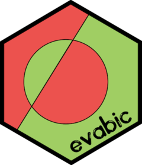

Changelog
Source:NEWS.md
evabic 0.0.4
- Clear error message when using
nl2c()with a unnamed logical vector.
evabic 0.0.2
New function
ebc_AUC_from_measures()to compute AUC directly from the tidy dataframe.New function
add_names()to add (eventually default) names to a vector.